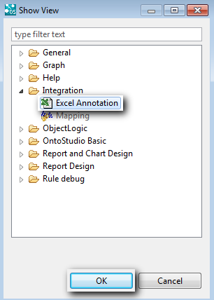
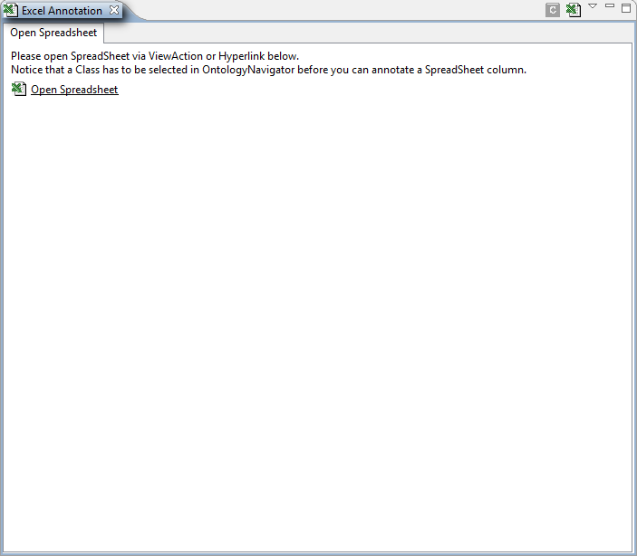
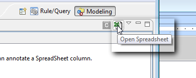
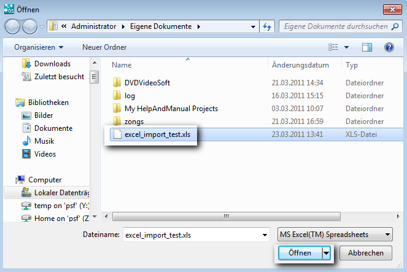
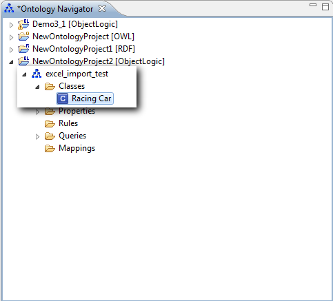
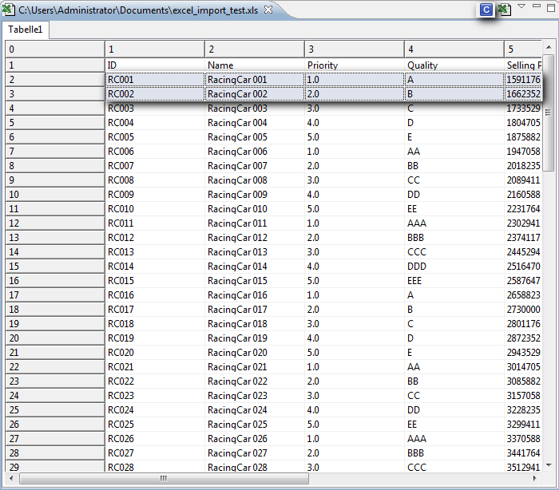
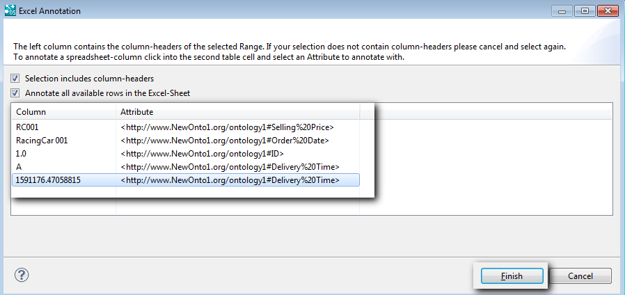
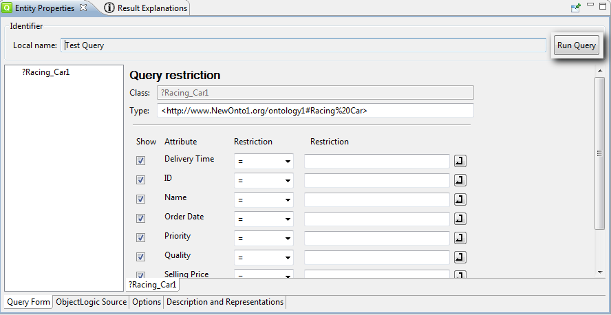
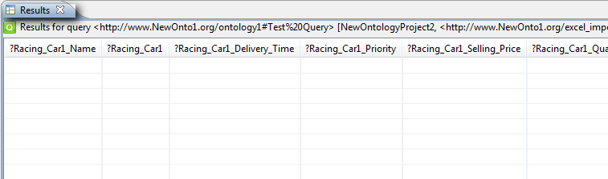

|

|
|
Integrating an Excel Data Sheet |
|
|
|
|
Integrating an Excel Data Sheet |
The Excel Import does not rely on an import wizard like other import functions, but is rather realized by a stand-alone application, the so-called "excel view".
| 1. | From the top level menu select : Window -> Show View -> Other.... |
The following dialog box appears:

| 2. | Select Integration -> Excel Annotation and click on OK. |
The Excel Annotation perspective appears:

| 3. | Click on the Open Spreadsheet icon, which is in the right hand corner of the view: |

A File Chooser dialog appears:

| 4. | Select the Excel file to be imported and click on Open. |
The chosen file is imported.
| 5. | Select the concept with which you want to annotate: |

| 6. | Select a section (SHIFT + mouse click) of the Excel data and click on Annotate selection. |

The chosen section is selected and the following form appears:

| 7. | Flag the Selection includes column-headers and the Annotate all available rows checkboxes. |
Selection includes column-headers prevents the headers being displayed in your result.
Annotate all available rows is useful for including all of the rows in your result instead of just the selected ones.
| 9. | Select the properties for each column and then click on Finish. |
The annotated instances are marked.
| 10. | Create a query on the corresponding class with the annotated properties selected and then click on Run Query.... |

The result of the query is displayed in the Results view:
